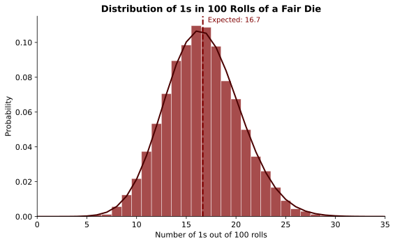
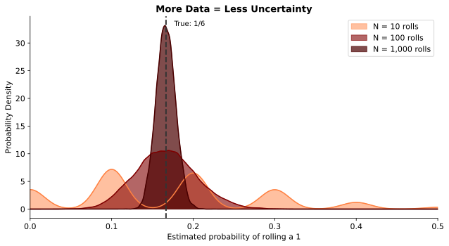
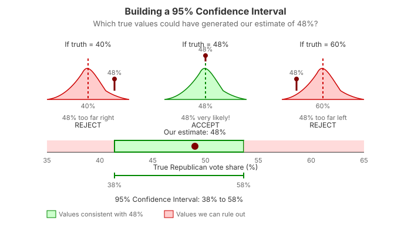
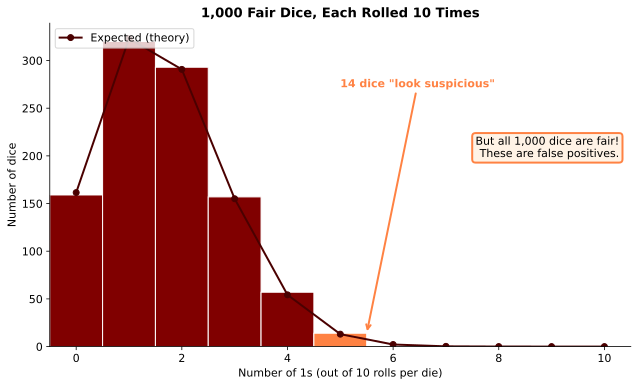

Uncertainty
Economics for Everyone
Switching gears
You’ve learned one of the most important lessons about data analysis:
Correlation does not imply causation.
Today we dive into a second crucial issue:
How to think about uncertainty.
A motivating example
Imagine we run an experiment in Chicago Heights.
- Randomly assign students to earn incentive payments for higher test scores
- Treatment group scores 11% higher than control
Great! But we run the experiment again…
- This time the effect is 15%
What is the true effect? 11%? 15%? Something else?
The fundamental insight
Even under ideal conditions—a carefully designed randomized experiment—
Data do not give us the truth. They give us an estimate.
An estimate is hopefully informative about the truth, but we need to ask: how informative?
You’ve seen this before
“Margin of error” on a political poll
“Confidence interval” on an effect estimate
“Statistically significant” effect of a new drug
These are all ways of quantifying uncertainty.
Key ideas for today
Parameters vs. estimates: The difference between the “true” effect and what data give us
Statistical uncertainty: How informative is any estimate about the underlying truth?
Sampling uncertainty: Uncertainty from only seeing a portion of the full data
Confidence intervals: Measures of which parameters are consistent with your data
Bayesian reasoning: Combining evidence with prior knowledge
Testing for Loaded Dice
A hands-on example
A suspicious evening
You’re at the craps table. The dice keep coming up snake eyes way more than you’d like.
Is the casino cheating?
When nobody’s looking, you steal one of the dice to investigate later.
(You’re still many hundreds in the hole.)
Quick probability check
If the die is fair, what’s the chance it comes up 1?
1 in 6 (about 16.7%)
If we roll twice, what’s the chance of getting 1 both times?
1/6 × 1/6 = 1/36 (about 2.8%)
How many 1s in a row before you get suspicious?
A more formal test
The casino probably isn’t that clumsy. You decide to run a proper experiment:
Roll the die 100 times and count how often it comes up 1.
If the die is fair, how many 1s do you expect?
What do you think?
[Poll Everywhere: You roll a fair die 100 times. How many 1s would make you suspicious?]
What does the math say?

Even a fair die won’t give you exactly 16-17 ones every time.
The key insight
Even if the die is fair, there’s randomness affecting each roll.
We can’t expect exactly 1/6 ones. But we can quantify the range of outcomes we might see.
If we get 20 ones out of 100, is that suspicious?
If we get 30 ones? 40 ones?
More data helps

Why does more data help?
As we collect more data, we average out the randomness.
With 10 rolls, getting 3 ones (30%) isn’t unusual.
With 1,000 rolls, getting 300 ones (30%) would be extremely suspicious.
More data = Less uncertainty
Sampling Uncertainty
From dice to polls
Same idea, different context
The die example is a type of sampling uncertainty.
- We want to know: How often would this die show 1 if rolled infinitely many times?
- We observe: The results of 100 rolls (a sample)
This same logic applies whenever our data is just a sample from a larger population.
Polling example
You want to measure the share of voters who will support Republicans in the midterms.
Ideal approach: Ask every voter in America.
Reality: That’s prohibitively expensive. So you ask a random sample.
How useful is your sample?
If you ask 1 voter:
How confident are you that they represent all voters?
If you ask 10 voters:
A bit better, but still pretty uncertain.
If you ask 1,000 voters:
Much more confident that your estimate is close to the truth.
The question
You poll 100 voters and find 48% support Republicans.
Your goal is to know the true support in the full population.
How close is 48% to the truth?
Thankfully, there are tools to answer this question.
Quantifying Uncertainty
Building confidence intervals
The easiest way to think about it
Suppose the true Republican vote share is 49%.
If we sample 100 voters at random, what estimates might we get?
We could simulate this thousands of times and see the distribution of possible results.
Building a confidence interval
You poll 100 voters and find 48% support Republicans.
Now ask: Which true values could have plausibly generated 48%?
For each possible true value, we can simulate what estimates we’d get…
Testing the truth: Is it 50%?
If the true share were 50%, simulations show we’d get estimates like 48% pretty often.
50% is consistent with our data.
Testing the truth: Is it 55%?
If the true share were 55%, getting 48% would be unusual but not crazy.
55% is borderline—maybe consistent, maybe not.
Testing the truth: Is it 70%?
If the true share were 70%, getting 48% would be extremely unlikely.
70% is inconsistent with our data. We can rule it out.
The confidence interval
A 95% confidence interval is the set of true values that could have generated our estimate at least 95% of the time.

What does the length tell us?
The length of the interval reflects your precision.
- Short CI = You can rule out many values (precise estimate)
- Long CI = Many values are still plausible (imprecise estimate)
More data → shorter confidence intervals.
Hypothesis tests
Sometimes we just want a yes/no answer:
Are the data consistent with a particular value?
This is called a hypothesis test.
Most commonly: Can we rule out zero effect?
If zero is outside our confidence interval, we say the result is statistically significant.
An important caveat
Statistically significant ≠ Important
- A tiny effect can be “significant” with enough data
- A big effect can be “not significant” with limited data
Significance just means: unlikely to be pure noise
Cooking the Books
When statistical tests go wrong
A subtle problem
Even our statistical tests are subject to uncertainty.
I can never tell you with certainty whether the true vote share is 53% or 51%.
There’s always some chance my estimate is just a fluke.
What happens with many tests?
Suppose I give you 1,000 dice.
You don’t know this, but all of them are actually fair.
You test each die by rolling it 10 times.
You decide that any die showing 5 or more ones is “suspicious”.
The result

The problem
Getting 5+ ones out of 10 rolls happens about 2% of the time for a fair die.
But with 1,000 dice, you expect about 20 dice to “look suspicious.”
These aren’t loaded—they’re false positives.
More tests = More flukes
P-hacking
This is called the multiple hypothesis testing problem.
If I run many experiments and only report the winner, my tests become unreliable.
Cherry-picking results this way is sometimes called p-hacking.
Be skeptical
Thinking like an economist means being skeptical when someone shows a “significant” result that may just be the survivor of many trials.
Always ask:
- How many things did they test?
- Are they showing all results or just the “winners”?
Thinking with Reverend Bayes
Another way to handle uncertainty
Two approaches to uncertainty
Everything we’ve discussed is sometimes called frequentist reasoning:
Quantify uncertainty from seeing limited data—if we repeated the study, we might get different results.
There’s another approach: Bayesian reasoning.
Thomas Bayes (1701-1761)

Bayesian reasoning combines evidence with your prior knowledge.
Let’s try it
Thanks to the registrar, I know the average age of everyone in this room.
What’s your guess?
Now let’s collect some data
Do you want to change your guess?
What just happened?
You started with prior beliefs about the average age.
You saw evidence (the sample of ages).
You updated to form posterior beliefs.
This is Bayesian reasoning.
The key questions
- How much did your guess change?
- What determines how much weight you put on the evidence vs. your prior?
Factors that matter:
- How confident you were initially
- How much evidence you saw
- How surprising the evidence was
Uncertainty still matters
Whether you think like a frequentist or a Bayesian:
Being able to think about the precision of your estimates is essential.
Uncertainty determines how much weight to put on evidence vs. prior beliefs.
Wrapping Up
What we learned today
Data give us estimates, not truth.
Uncertainty is unavoidable—even in perfect experiments.
More data reduces uncertainty by averaging out randomness.
Confidence intervals tell us which parameter values are consistent with our data.
Multiple testing creates false positives—be skeptical of cherry-picked results.
The bottom line
Thinking like an economist means understanding that results are subject to statistical uncertainty—and knowing how to quantify it.
Whether you’re reading a poll, evaluating a drug trial, or running your own experiment, always ask:
How confident should I be?